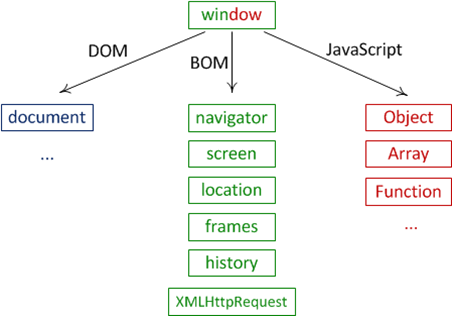
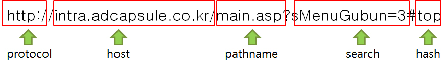
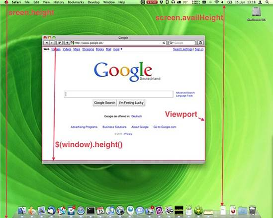
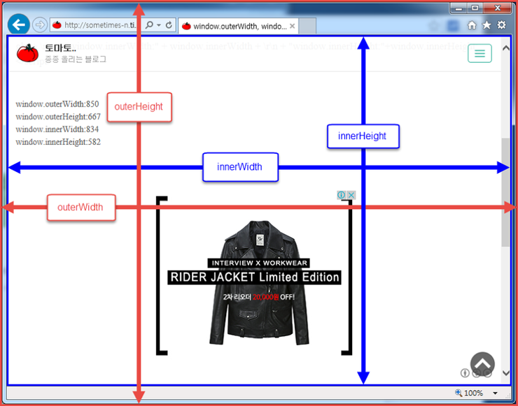

Browser Object Model
웹 브라우저를 제어하기 위해서 브라우저가 제공해주는 객체
자바스크립트를 통해서 새 창을 연다거나 현재창의 url 의 주소를 알아내거나 브라우저의 제품명이나 버전을 알 수 있다.
모두 window 전역객체 안에 소속되어 있다.(window.document == document)
Window생략 가능

| 메서드 | 설명 |
|---|---|
| open() | 새 창을 열 때 사용한다. |
| alert() | 경고 창을 띄운다. |
| prompt() | 질의응답 창을 띄운다. |
| confirm() | 확인/취소 창을 띄운다. |
| moveTo() | 창의 위치를 이동시킨다. |
| resizeTo() | 창의 크기를 변경시킨다. |
| setInterval() | 일정 간격으로 지속적으로 실행문을 실행시킬때 사용한다. |
| setTimeout() | 일정 간격으로 한번만 실행문을 실행시킬 때 사용한다. |
window.open("[열릴 페이지 주소]", "[창 이름]", "[창 속성]");
Ex) window.open("http://google.co.kr", "window", "width=500,height=300");
Alert(‘[사용자 정의]’);
Ex) Alert(‘hello world’);
Prompt(‘[사용자 정의]’);
Ex) Prompt(‘당신의 이름은?’);
Confirm(‘[사용자 정의]’);
Ex) Confirm(‘여자입니까?’);
moveTo(x,y);
Ex) moveTo(100,100);
resizeTo(너비,높이);
Ex) resizeTo(500,500);
setInterval(function(){함수 입력},[시간]);
Ex) setInterval(function(){
Win.resizeBy(-20,-20);
Win.moveBy(10,10);
},1000);
1000 = 1초
setTimeout(function(){함수 입력},[시간]);
Ex) setTimeout(function(){
win.close();
},1000);
| 메서드 | 설명 |
|---|---|
| history.back() | 이전 방문한 페이지로 이동한다. |
| history.forward() | 다음 방문한 페이지로 이동한다. |
| history.go(숫자) | 숫자가 -2이면 2단계 이전 페이지로 이동 |
| history.length | 방문기록에 저장된 목록의 개수를 반환 |
| 메서드 | 설명 |
|---|---|
| location.href | 주소 영역에 참조 주소를 설정하거나 url을 반환 |
| location.hash | url에 hash값(#에 명시된 값)을 반환 (http://naver.com#top) |
| location.hostname | url에 호스트 이름을 설정하거나 반환 |
| location.host | url에 호스트 이름과 포트 번호를 가져온다. |
| location.port | url 포트 번호를 반환 |
| location.protocol | url에 프로토콜을 반환 |
| loaction.search | url에 쿼리(요청 값)을 반환 |
| location.reload() | 새로고침 |
location.href= 이동할 url;
location.assign(“이동할 url”);
location.replace(“이동할 url”);
Assign() 현재위치를 이동(이동 전 현재 웹 페이지를 스택에 저장)
Replace() 현재위치를 이동(이동 전 현재 웹 페이지를 스택에 저장하지 않음 == 뒤로가기 버튼으로 이동 전 웹 페이지에 접근 할 수 없다.)
: 보안상 이전 페이지 접근을 막는 용도로 사용가능
console.log(location); 콘솔은 내부인자를 분석해서 화면에 뿌려줌 여러가지가 나옴
Alert(location); alert은 문자열만 받기 때문에 주소만 나옴

| 메서드 | 설명 |
|---|---|
| navigator.appCodeName | 브라우저 코드명을 반환 |
| navigator.appName | 브라우저 이름을 반환 |
| navigator.appVersion | 브라우저 버전 정보를 반환 |
| navigator.language | 브라우저 사용 언어 반환 |
| navigator.product | 브라우저 사용 엔진 이름 반환 |
| navigator.platform | 브라우저를 실행하는 운영체제를 반환 |
| navigator.userAgent | 브라우저와 운영체제 종합 정보를 반환 |
브라우저의 정보를 제공하는 객체, 주로 호환성 문제 등을 위해서 사용
| 메서드 | 설명 |
|---|---|
| screen.width | 화면의 너비값을 반환 |
| screen.height | 화면의 높이값을 반환 |
| screen.availWidth | 작업 표시줄을 제외한 화면의 너비값을 반환 |
| screen.avaiHeight | 작업표시줄을 제외한 화면의 높이값을 반환 |
| screen.colorDepth | 사용자 모니터가 표현 가능한 컬러 bit를 반환 |
Window.height 는 맞지 않는 문법이며 $(window).height로 창의 높이를 구할 수 있다.
Screen.height는 모니터의 높이를 나타내며(고정 값) window.outerheight는 브라우저창의 높이를 나타낸다.
(가변 값 = 사용자가 브라우저의 크기를 조절하면 값이 바뀐다.)
 